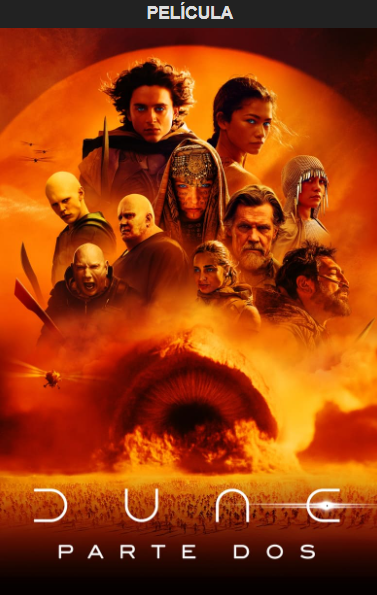

Sinopsis
Sigue el viaje mítico de Paul Atreides mientras se une a Chani y los Fremen en una guerra de venganza contra los conspiradores que destruyeron a su familia. Al enfrentarse a una elección entre el amor de su vida y el destino del universo conocido, Paul se esfuerza por evitar un futuro terrible que solo él puede prever.